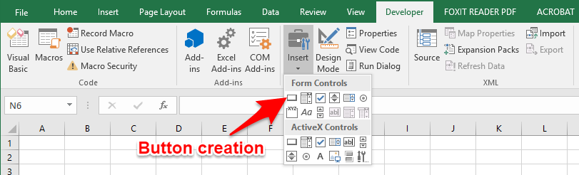

Objectives For Today
- Fundamental Programming with Visual Basic for Applications (VBA)
Fundamentals of Programming with VBA
Notes:
- The concepts and capabilities of how programming works is more important than the syntax.
- Many important languages have similar programming structures.
- Yet every language has its own purpose, functions and weaknesses.
- The reason why we are starting with VBA is because you've been using Excel, and it is an easy transition towards a taste of what programming feels like.
- Also, using scripts on your spreadsheet can help automate some of the repetitive work you have.
- Later in the course, you'll deal with more advance languages such as Python and Javascript.
- If you're on a Mac running Excel 365, to activate the
Developertab, open the Excel menu and selectPreferences, then open the preferences for theRibbonandToolbar. - There might be warnings on "Macros" on your machine. You'll have to enable them because you're writing scripts.
- Macros are a set of actions that you can run as many times as you want, and they often come in the form of scripts.

Hello World! on VBA
The slides should show you how to access the Developer tab to craft visual basic scripts.
- Modules are organizational units of VBA code that are usually attached to a workbook or worksheet. Right-click on a workbook or worksheet and then select
Insert Module. - Once inside a module, we can start writing a VBA script. In our case, we've already created a script that will trigger Excel to deliver a pop-up message.
Give it a try in class! Otherwise, you will not be able to follow easily later.
Students Do: Hello, VBA
Create and execute a VBA script that generates three pop-up messages containing any text of your choice.
You can run your script via the Macros tab as shown:
Button Clicks
We want to start inserting a button on a spreadsheet. This is something you will often see, even with a website.
- Create a button: 
- The
Assign Macrowindow will pop up, where you can choose to create a new macro, or select an existing routine. - In layman terms, we are attributing a behavior to the button whenever somebody clicks on it.
- As your scripts become more complex, it is important to organize the scope of your macros and buttons.
Students Do: Choose Your Button - Subroutines
You will create two buttons that each run a different subroutine that trigger different messages when clicked.
Cells & Ranges
Previously, we only created message boxes within Excel. That is probably not that useful in a real-world setting.
We would want to automate a series of actions on cells through macros.
- VBA provides 2 primary ways to modify the contents of a spreadsheet:
CellsandRanges Rangesare what we have been working with thus far, such as:F5:F8or noncontiguous:R2,D2Cellsprovide a cordinate-based method for referencing cells in a spreadsheet:(Row, Column).Valueis a method that we add to the end of ourCellorRangeto change the content value within the specified cells.- This can include the formatting, style, and other aspects of the cell beyond the content itself.
- Javascript has the similar behaviors to this, which we will learn later in the course.
' Inserting Data Via Cells
Cells(2, 1).Value = "Cat"
Cells(2, 2).Value = "In"
Cells(2, 3).Value = "The"
Cells(2, 4).Value = "Hat"
' Inserting Data Via Ranges
Range("F1").Value = "I"
Range("F2").Value = "Am"
Range("F3").Value = "Sam"
' Inserting Data Across Ranges
Range("F5:F7").Value = 5
Students Do: Chess Board
My first actual program that I coded in C was to create a hangman game.
In a similar fashion, you're adding the names of chess pieces to their starting positions on a provided chessboard.
Break - 15 mins @ 7:55pm
Variables
Variables are stored values that can subject to change, and they are represented by a name.
In algebra, they are often represented as x or y.
For example, an expression can be represented such as y = mx + b, where:
mis the gradient.bis the constant.xandyare variables (usually we call them "coordinates" as it is usually used on a map or a graph), where they are subject to change based on the part of the line which you're referencing.
Some other references to describe a variable:
In programming, variables do not need to be numbers. It can be strings, characters, or even objects.
Why variables?
Storing values into variables allows us to scale and reuse the value over and over again because we understand the intention behind the variable rather than the actual value it represents.
For example: daily_wage = worked_hours * hourly_payout
- The
hourly_payoutcan be fixed, such as30. - However, if this is a temporary job,
worked_hoursis a variable, depending on how many hours you worked that day. - The above expression won't change just because you worked different hours daily, and you can use the expression to calculate the wages you receive on a daily basis. We can reuse such code in programming, and add in other elements such as taxes or inflation.
We are going to see how we can use variables in our script: variables_solutions.vbs
Students Do: Total Calculator
Open up total_calculator.xlsm for your class activity. If you want some starter code for help, open up the total_calculator.vbs in Visual Studio Code.
Instructions:
- Using the spreadsheet and unsolved VBS code as a starter, complete the script so that `Price`, `Tax`, `Quantity`, and `Total` are stored in variables.
- Then, assign these variables the value of their associated cell in the spreadsheet.
- Once complete, your code should set the `Total` value in the spreadsheet.
- Create a pop-up message that states the total value: "Your total is $45.00."
Bonus
Try to complete the exercise _without_ looking at the starter code.
Arrays
Arrays is a staple in many modern programming languages. In Python, they are called 'lists'.
It is not important to master or memorize the VBA syntax. That will come with practice and business context you're in.
However, since arrays is a staple data structure within many modern langauges, understand how you can use them in VBA and apply them in any other languages you work on.
What are arrays?
An array is a specific type of variable or data structure that stores multiple variables with a single name. We will open up simple_arrays_solution.xslm for discussion.
- Most programming languages (excluding R), we start counting an index from 0 instead of 1.
Splitting Strings
String manipulation is essential for programming and search engines, especially when you're dealing with speech-to-text work. Let's open up splitting_solution.xlsm for discussion.
Students Do: Sentence Breaker
This is a difficult activity. Use the starter code in sentence_breaker.vbs to guide you.
Instructions
- Retrieve the user sentence and store it in a variable.
- Retrieve the user word numbers and store them in variables.
- Split the user sentence into separate words.
- Use the word numbers to retrieve specific words in the sentence.
Tips
Always break your code into parts and check the smaller parts by running the script. This will help you to surface errors quickly without debugging the whole script.
Conditionals
Last week, we use conditionals on a grade book within a cell. This time, we are going to implement conditions using a script.
Students Do: Choose Your Story - Conditionals
In this activity, you will practice using conditionals by creating the first step of a role-playing adventure.
Instructions
Create an Excel workbook and VBA macro that provides a user with an input field and a single button. Based on the user-input number (1, 2, 3, or 4), the button will trigger different message boxes as follows:
- If the user enters a value of 1, display “You choose to enter the wooded forest of doom!”
- If the user enters a value of 2, display “You choose to enter the fiery volcano of doom!”
- If the user enters a value of 3, display “You choose to enter the terrifying jungle of doom!”
- If the user enters a value of 4, display a similar custom message.
- If the user enters anything else, display “You decide to stay home instead.”